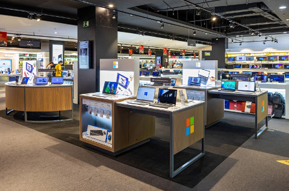

Trabajamos en Alcalá de Guadaira para ofrecerte todo lo que necesites.
Ayudamos a los clientes a elegir los mejores productos para complacer sus necesidades.
Todos estos productos están también de segunda mano a la venta, podrás contactar con nosotros en Ventatecno@gmail.com.
La tecnología es útil y beneficiosa en muchas áreas, en especial en la nuestra, en la de la información, ya que nos permite mejorar la organización del trabajo en nuestras vidas (profesional y personal), nos permite reducir tareas repetitivas, mejorar la gestión interna de un proceso, ofrecer y recibir más y mejores servicios individuales y colectivos.
Como parte del proceso de adaptación de la sociedad a los cambios tecnológicos contemporáneos la biblioteca no ha sido una excepción a éstos, pues la han llevado a integrarse a la alta tecnología y a la más avanzada de procesos de organización y almacenamiento de información para que de esta manera los servicios que se ofrecen sean excelentes y actualizados. Entre los recursos tecnológicos disponibles en la biblioteca se encuentran; el acceso a la Internet, diferentes bases de datos, CD-Rom y otros.
La tecnología se ha dejado sentir en todas las áreas. En nuestros hogares la encontramos prácticamente en cada rincón, y muchas veces sin darnos cuenta. Contamos en nuestros hogares con microondas, videos caseteras, disco compacto, computador, vídeo juego y otros. Estos productos de la tecnología enriquecen nuestra calidad de vida.
En el área profesional la encontramos por doquier, desde el ya común computador que facilita y agiliza muchas tareas, y que los conecta a través de los diversos programas y sistemas existentes, y a los lugares donde no se puedan imaginar.
Descargar